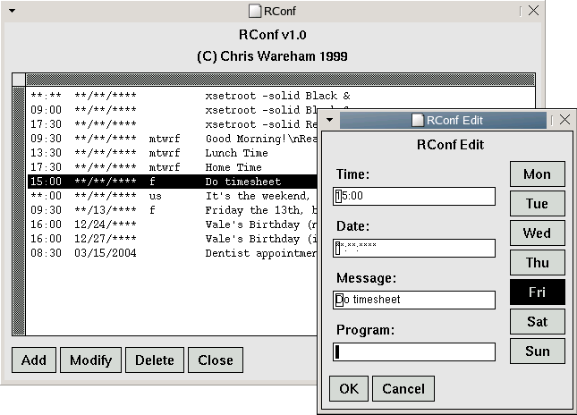

RConf is a configuration tool for Rclock - the xclock replacement that comes with the Rxvt terminal emulator. Rclock features a memo facility, and RConf is a means to configure it.
To make RConf as portable as possible, it relies on nothing more than the Athena widget toolkit which is included in most installs of the X Window system. It's not the prettiest GUI toolkit in the world, but it gets the job done.
Last updated: 10/07/2003